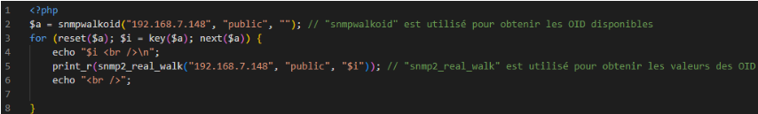
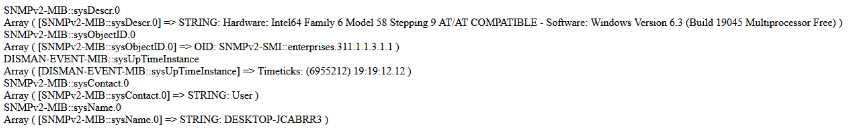
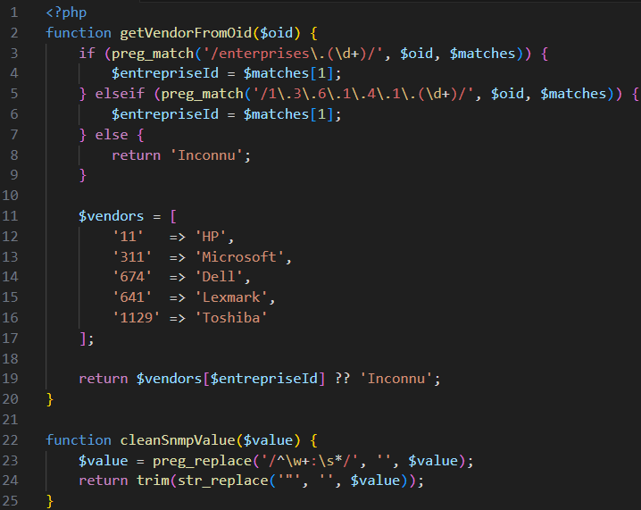
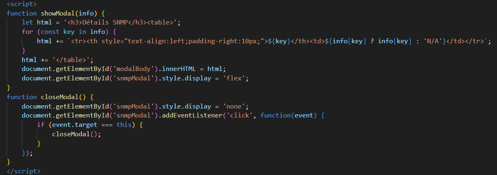
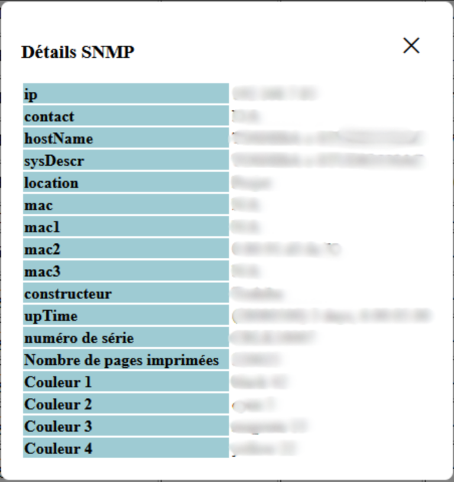
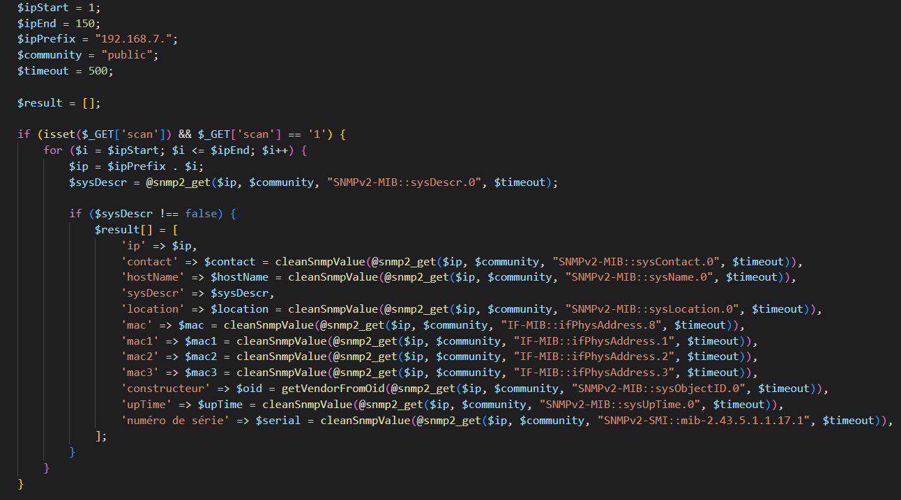
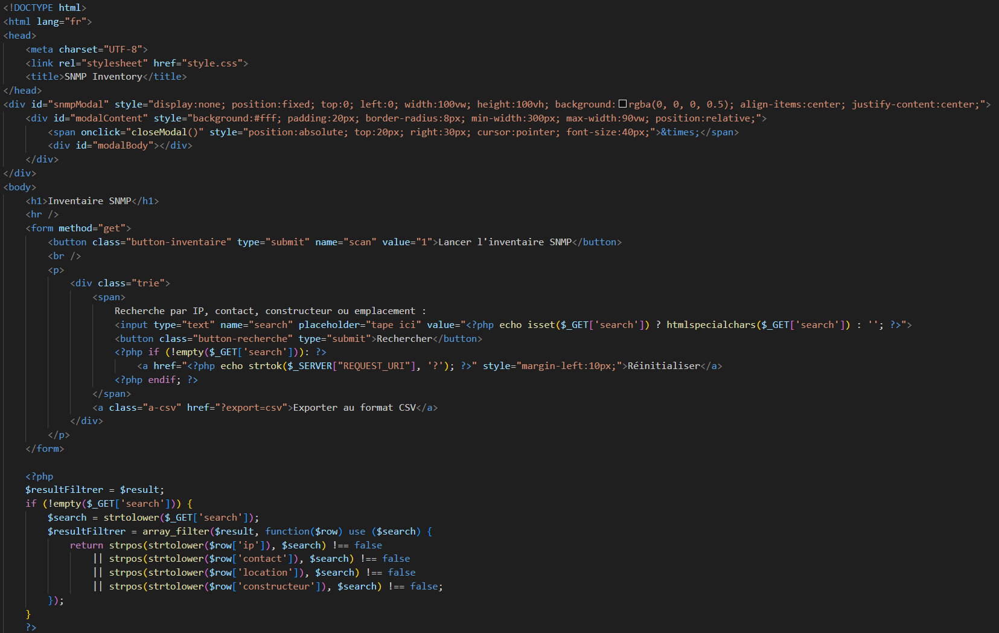
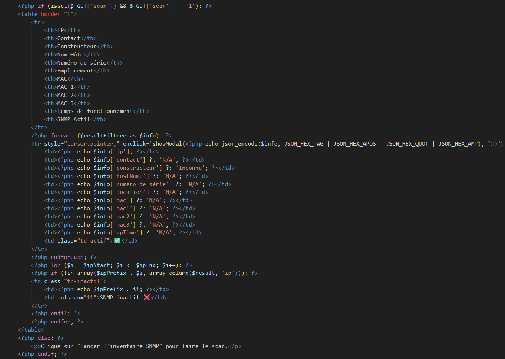
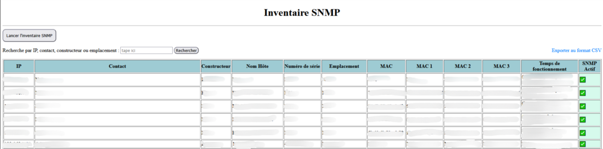

Mission : Développement d'un outil d'analyse du parc informatique
26 mai 2025 - 27 juin 2025
Entreprise : SATEB
Objectif du stage : automatiser la récupération d'informations des équipements du parc informatique via SNMP, puis afficher les résultats dans un inventaire clair et exploitable.
Compétences bloc 1 mobilisées
CONTEXTE DU PROJET
Projet : Améliorer l'analyse du parc informatique.
Besoin : récupérer l'état de tous les appareils électroniques du parc informatique.
Raison : la gestion manuelle était devenue trop lourde, donc automatisation nécessaire.
Objectif : développer un programme type OCS Inventory.
Environnement technologique : WampServer (PHP), HTML/CSS, JavaScript.
DÉCOUVERTE SNMP


DÉVELOPPEMENT - SCRIPTS ET MODALS




AFFICHAGE DE L'INVENTAIRE


RÉSULTAT FINAL
